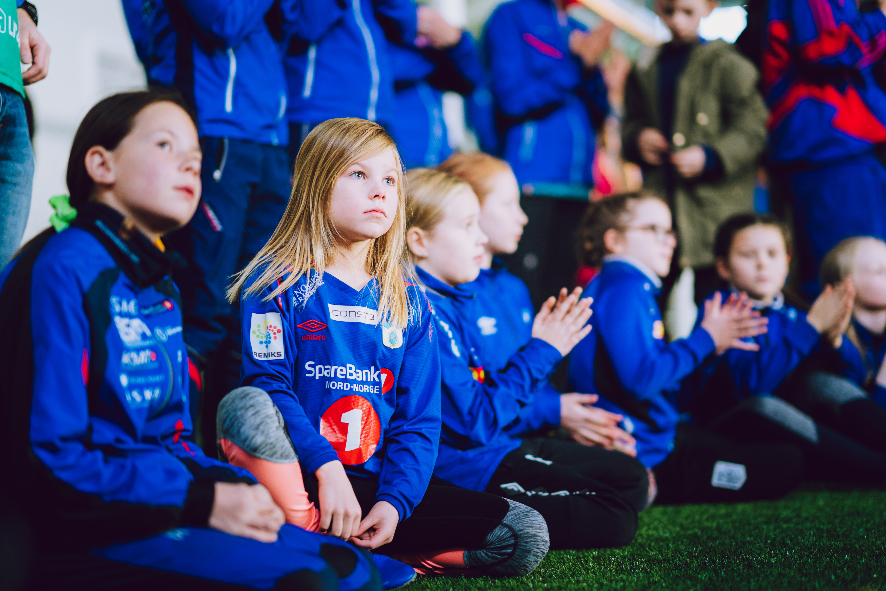

Hvorfor samfunnsplattform
Det står mer på spill enn tre poeng
I Tromsø står 850 unge voksne mellom 20 og 29 år utenfor både arbeid og NAVs støtteordninger. Og veien dit starter tidlig: 3 av 4 har vært innom organisert idrett – men 69 prosent slutter før de fyller 18. Knekken kommer ved 15 år. Da står flere utenfor idretten enn i den. Og frafallet meldes stadig tidligere – nå helt ned i 10–12-årsalderen.
Unge som faller ut av fritidsaktivitet, mister mer enn treninger: de mister fellesskap, mestring og voksne som ser dem.
Ingen løser dette alene. Men noen må ta posisjonen – og invitere resten med.
Kilder: iTromsø (850) · Norges Idrettsforbund (69 %) · Ungdata.no (3 av 4) · Nordlys og NRK (frafall ved 15 år)
Derfor tar TUIL posisjonen
TUIL har siden 1938 vist at samarbeid bygger mer enn idrett. Over 500 millioner kroner er investert i Tromsdalen sammen med andre – anlegg, aktivitet og møteplasser som hele bydelen bruker. Hver dag samler klubben barn, unge og voksne på tvers av bakgrunn, økonomi og ferdighet.
Det gir TUIL noe få andre har: infrastrukturen, fellesskapet og tilliten som trengs for å drive samfunnsutvikling i praksis. X9 er måten vi setter det i system på.
De fem pilarene
Fire pilarer handler om hva TUIL gir til ulike deler av samfunnet. Den femte – Partnerskapet – finansierer og holder de fire andre oppe.
Mennesket
Idrett selges gjerne som «bra for kroppen». Det som skiller TUIL ut, er at vi tar ansvar for hele mennesket – selvbilde, lederevne, mental helse og det å høre til.
- Mestring — barn og unge lærer å lykkes, feile og reise seg, med voksne som ser dem.
- Å høre til — laget som sosial base, særlig for de som ikke finner plassen sin andre steder.
- Lederutvikling — Ung Leder gir 16–22-åringer ekte ansvar, ledelse i praksis, ikke teori.
Fellesskapet
Ingen utvikler seg alene. TUIL er mer enn lagene våre: frivillige, foreldre, besteforeldre og naboer som aldri har satt fot på banen, men likevel kjenner seg som en del av TUIL.
- Frivillighet — de som gir tid gratis er motoren, og fortjener å bli sett.
- Inkludering — lav terskel og ingen stengte dører, uansett økonomi, bakgrunn eller nivå.
- På tvers av generasjoner — steder der barn, foreldre og besteforeldre møtes om samme sak.
Nabolaget
Tromsdalen er ikke bare der TUIL holder til – det er grunnen til at vi finnes.
- Et åpent anlegg — skal kjennes som alles, ikke bare medlemmenes.
- Nabolagsmåltid — et fast, gratis fellesmåltid hver måned, laget av lokale folk.
- Naturen rundt oss — vi rydder, merker og vedlikeholder turløyper i Tromsdalen, for alle.
Fremtiden
X9 er bygd for å vare i ni år – bevisst annerledes enn ettårige sponsorater som er lette å avslutte uten at noen merker det.
- Bærekraft — ansvarlig ressursbruk skal synes i hvordan vi driver anlegget.
- Data — vi måler deltakelse, oppmøte og forståelse løpende, og bruker det til å bli bedre.
- En modell andre kan bruke — når X9 er dokumentert og virker, kan andre idrettslag lære av det.
Partnerskapet
De fire foregående pilarene handler om hva TUIL gir. Denne handler om hvordan vi får råd til det – og kommer bevisst sist: en partner som har lest om de fire andre skjønner nøyaktig hva de blir med på, før de får se prisen.
- Næringslivet — tre nivåer: Støttespiller, Samfunnspartner og Hovedpartner, alle med ni-årsavtaler, ikke årlig sponsing.
- Det offentlige — kommune, fylke og statlige ordninger, med folkehelse og integrering som argument.
- Frivillige — alle de ubetalte timene er en stor del av det X9 leverer, og teller med i regnestykket.
Én krone inn. Ni kroner ut.
Verdien av det som skjer i og rundt TUIL er beregnet: hver krone som investeres i klubben, gir ni kroner tilbake i samfunnsverdi.
Beregningene bygger på konservative anslag og modeller fra Vista Analyse, Helsedirektoratet, Norges Fotballforbund, Høgskolen i Innlandet og BDO. Helseeffekten – verdien av at mennesker går fra inaktive til aktive – er hentet fra offentlig brukte folkehelseanalyser. Verdien av inkludering og oppvekst er foreløpig ikke tallfestet, men dokumentert gjennom kvalitative analyser og forskningsreferanser. 1:9 er med andre ord et forsiktig anslag – den fulle verdien er større.
Det er dette X9 betyr: gangeeffekten. Frivilligheten alene er verdt 9,7 millioner kroner i året. Når virksomheter, det offentlige og klubben investerer sammen, ganges innsatsen opp – i aktivitet, i tilhørighet, i folk.
Slik virker plattformen i praksis
X9 består av tre samfunnsprodukter. Hvert av dem svarer på en konkret utfordring – og hvert av dem kan en partner investere direkte i.
TUIL Ung
Investering i unge stemmer og fremtidens klubb. Lederkurset Ung Leder (16–22 år) og innholdskurset Unge stemmer (15–22 år) gir unge ansvar, kompetanse og en plass i fellesskapet – for å forebygge frafall og bygge klubben nedenfra. Sterkere sammen.
Besøk tuilung.com ↗Møteplassen
Summen av alt det uorganiserte som skjer i og rundt anlegget: foreldremøter, lagsmøter, fortellerkvelder, temakvelder, dans, pensjonistforeningens møter og bydelsrådets møter. Møteplassen samler bydelen på tvers av generasjoner – de som ikke lenger spiller, og de som aldri har spilt. Gjennom anlegget har den et av de største potensialene i hele plattformen.

Jenteløftet
Jenter og gutter utvikler seg forskjellig – spesielt i ungdomsårene – og frafallet blant jenter er for høyt. Jenteløftet handler om å tenke utradisjonelt og tilrettelegge på jentenes premisser, slik at klubben blir mer attraktiv å bli i. I praksis betyr det at aktiviteten og den sosiale delen av tilbudet dyrkes like godt.